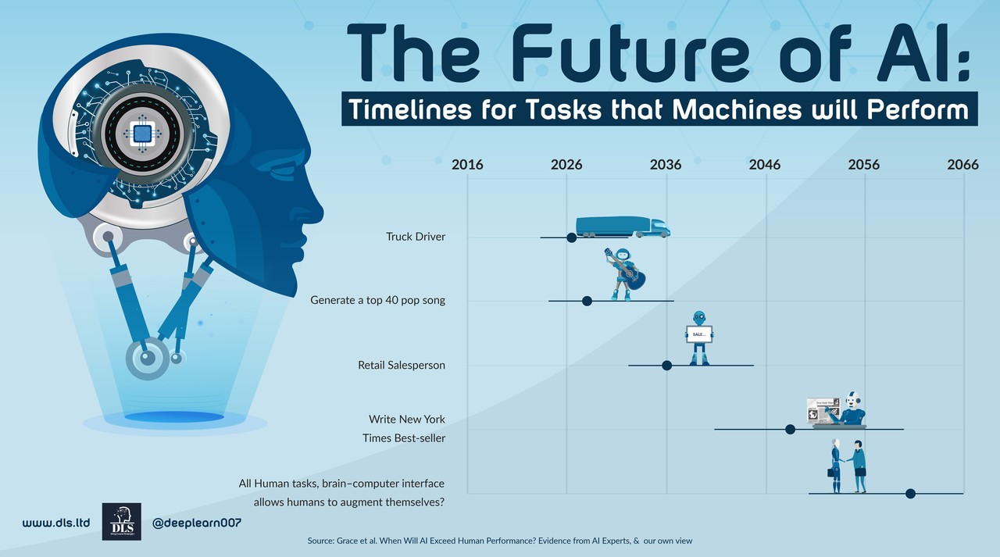

The Future of AI in Industry
By John Doe
Published on October 5, 2024
Introduction
Artificial Intelligence (AI) is rapidly transforming industries across the globe, revolutionizing how businesses operate and how work is conducted. This article explores the current state of AI in various sectors and examines its potential future impacts.
Current Applications of AI in Industry
AI is already being utilized in numerous ways across different industries:
- Manufacturing: Predictive maintenance, quality control, and robotic process automation
- Healthcare: Diagnostic assistance, drug discovery, and personalized treatment plans
- Finance: Fraud detection, algorithmic trading, and customer service chatbots
- Retail: Inventory management, personalized recommendations, and demand forecasting
The Future of AI: Potential Developments
As AI continues to evolve, we can expect to see:
- More sophisticated natural language processing, enabling more human-like interactions with AI systems
- Advancements in computer vision, leading to improvements in autonomous vehicles and quality control processes
- Enhanced decision-making capabilities, potentially assisting in complex strategic planning
- Increased automation of cognitive tasks, reshaping job roles and creating new opportunities
Challenges and Considerations
While the potential of AI is vast, there are several challenges to consider:
- Ethical concerns around AI decision-making and potential biases
- Data privacy and security issues
- The need for workforce reskilling and adaptation
- Ensuring responsible development and deployment of AI technologies
Conclusion
The future of AI in industry is both exciting and challenging. As these technologies continue to develop, it's crucial for businesses, policymakers, and individuals to stay informed and actively engage in shaping the AI-driven future of work.
For more information on this topic, visit Example AI Industry Report.